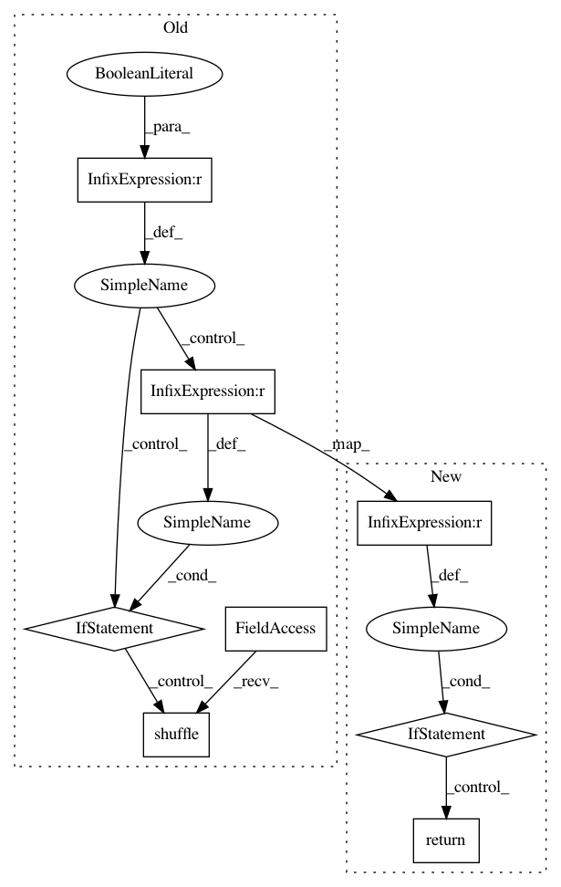

fec202278a4ecc6e3df57a13e3b2c16b16f09207,delft/sequenceLabelling/data_generator.py,DataGenerator,on_epoch_end,#DataGenerator#,68
Before Change
def on_epoch_end(self):
// shuffle dataset at each epoch
if self.shuffle == True:
if self.y is None:
np.random.shuffle(self.x)
else:
self.shuffle_pair(self.x,self.y)
def __data_generation(self, index):
"Generates data containing batch_size samples"
max_iter = min(self.batch_size, len(self.x)-self.batch_size*index)
After Change
def on_epoch_end(self):
// If we are predicting, we don"t need to shuffle
if self.y is None:
return
// shuffle dataset at each epoch
if self.shuffle:
self._shuffle_dataset()
def __data_generation(self, index):
In pattern: SUPERPATTERN
Frequency: 3
Non-data size: 8
Instances
Project Name: kermitt2/delft
Commit Name: fec202278a4ecc6e3df57a13e3b2c16b16f09207
Time: 2019-12-24
Author: luca@foppiano.org
File Name: delft/sequenceLabelling/data_generator.py
Class Name: DataGenerator
Method Name: on_epoch_end
Project Name: kermitt2/delft
Commit Name: c285c3bd908e5e5bd459f8ccfa86fe388d548cdc
Time: 2020-02-02
Author: lfoppiano@users.noreply.github.com
File Name: delft/textClassification/data_generator.py
Class Name: DataGenerator
Method Name: on_epoch_end
Project Name: kermitt2/delft
Commit Name: c285c3bd908e5e5bd459f8ccfa86fe388d548cdc
Time: 2020-02-02
Author: lfoppiano@users.noreply.github.com
File Name: delft/sequenceLabelling/data_generator.py
Class Name: DataGenerator
Method Name: on_epoch_end